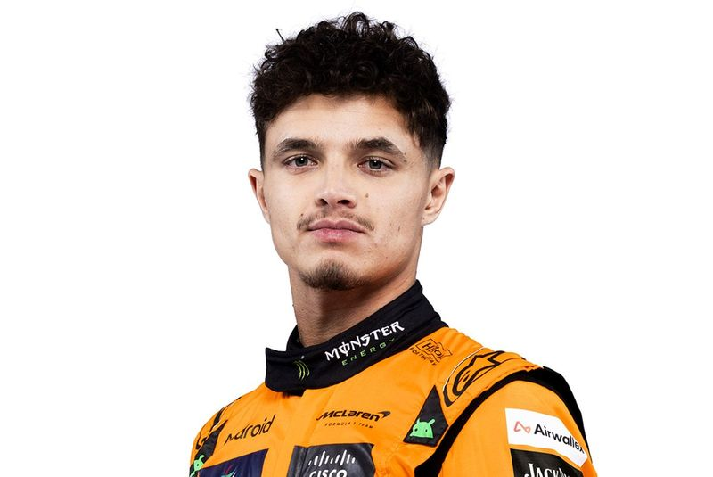
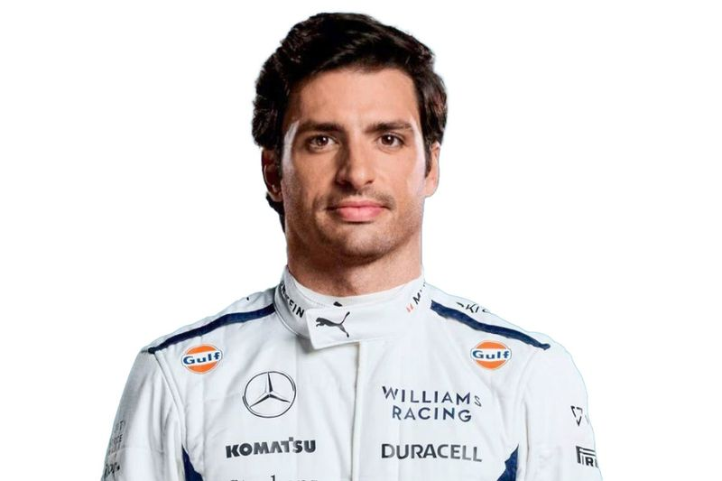

Lista de Pilotos
McLaren
Lando Norris
País: Reino Unido
Edad: 25
Debut: 2019
Resumen: Piloto británico conocido por su rapidez y carisma. Ha sido una de las figuras destacadas de McLaren en los últimos años.
Oscar Piastri

País: Australia
Edad: 23
Debut: 2023
Resumen: Campeón de F3 y F2, Piastri hizo su debut en F1 con McLaren en 2023. Su talento y habilidades lo han colocado como una de las jóvenes promesas del deporte.
Ferrari
Charles Leclerc

País: Mónaco
Edad: 27
Debut: 2018
Resumen: Leclerc ha sido una de las promesas más brillantes de la F1 en los últimos años. Con múltiples victorias y podios, es considerado uno de los futuros campeones del deporte.
Lewis Hamilton
País: Reino Unido
Edad: 39
Debut: 2007
Resumen: Con 7 campeonatos mundiales, Hamilton es uno de los pilotos más exitosos de la historia de la F1. Su paso a Ferrari en 2025 marca una nueva etapa en su carrera, buscando nuevos desafíos y éxitos.
Red Bull Racing
Max Verstappen

País: Países Bajos
Edad: 27
Debut: 2015
Resumen: Campeón mundial en 2021, 2022, 2023 y 2024, Verstappen es considerado uno de los pilotos más talentosos y consistentes de la era moderna. Su agresividad y habilidades en la pista lo han consolidado como una figura dominante en la F1.
Liam Lawson
País: Nueva Zelanda
Edad: 22
Debut: 2024
Resumen: El meteórico ascenso del neozelandés Liam Lawson a través de las filas del automovilismo le ha llevado a la cima de su sueño infantil: una plaza en el equipo Oracle Red Bull Racing de Fórmula Uno.
Mercedes
George Russell

País: Reino Unido
Edad: 26
Debut: 2019
Resumen: Russell ha sido una revelación en Mercedes, mostrando gran velocidad y consistencia. Se espera que continúe luchando por podios y victorias en las próximas temporadas.
Andrea Kimi Antonelli
País: Italia
Edad: 18
Debut: 2025
Resumen: Antonelli es el piloto más joven en la parrilla de 2025. Con un impresionante historial en categorías inferiores, su ascenso a la F1 ha sido uno de los temas más relevantes esta temporada.
Aston Martin
Fernando Alonso

País: España
Edad: 43
Debut: 2001
Resumen: Bicampeón del mundo y una leyenda viva de la F1. Alonso sigue compitiendo al más alto nivel con su estilo agresivo y experiencia invaluable.
Lance Stroll

País: Canadá
Edad: 26
Debut: 2017
Resumen: Hijo del dueño del equipo, Stroll ha mostrado flashes de talento con varios podios a lo largo de su carrera en F1.
Haas
Esteban Ocon
País: Francia
Edad: 28
Debut: 2016
Resumen: Ganador del GP de Hungría 2021, Ocon aporta experiencia a Haas tras su paso por Alpine y Force India.
Oliver Bearman
País: Reino Unido
Edad: 19
Debut: 2025
Resumen: Tras un debut brillante con Ferrari como sustituto en 2024, Bearman llega a Haas con gran proyección y talento puro.
RB (Racing Bulls)
Yuki Tsunoda
País: Japón
Edad: 24
Debut: 2021
Resumen: Tsunoda combina agresividad y técnica. Es uno de los pilotos más carismáticos de la parrilla, clave para RB.
Isack Hadjar
País: Francia
Edad: 20
Debut: 2025
Resumen: Joven promesa del programa de Red Bull, Hadjar debuta con el equipo satélite mostrando velocidad y determinación.
Williams
Carlos Sainz
País: España
Edad: 30
Debut: 2015
Resumen: Ex piloto de Ferrari, Sainz aporta experiencia y madurez a un proyecto en crecimiento con Williams.
Alexander Albon
País: Tailandia
Edad: 29
Debut: 2019
Resumen: Albon ha sido clave en la reconstrucción de Williams, destacando con actuaciones sólidas y consistentes.
Sauber
Gabriel Bortoleto
País: Brasil
Edad: 20
Debut: 2025
Resumen: Campeón de F3 en 2023 y F2 en 2024, el joven brasileño representa el futuro de Sauber con ambiciones de brillar en F1.
Nico Hülkenberg

País: Alemania
Edad: 37
Debut: 2010
Resumen: Con más de una década en la F1, Hülkenberg aporta veteranía y consistencia al equipo Sauber.